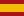

TV Guide for Home Assistant
Polen er tilgjengelig: 50 hovedkanaler, ekstra kanaler fra programkildene og et polsk grensesnitt.

Spania er tilgjengelig: 48 nasjonale og regionale hovedkanaler samt flere kanaler fra programkildene.Italia er nå tilgjengelig: 45 hovedkanaler og flere tilgjengelige kanaler fra programkildene.
Se hva som går på TV nå, planlegg kvelden og lagre programmer med påminnelser. TV Guide fungerer på datamaskin, nettbrett og mobil, med lyst og mørkt utseende.
Installer via Home Assistant Marketplace
Fra Home Assistant 2026.11.0 er Marketplace innebygd; HACS trenger ikke installeres separat.
- Åpne Innstillinger → Marketplace og søk etter TV Guide. Hvis den ikke står i katalogen, velg Legg til fra lenke, koble til GitHub ved behov og legg til repositoriet.
https://github.com/criticallimit/HA-TV-Guide. - Installer TV Guide og legg til integrasjonen under Innstillinger → Enheter og tjenester → Legg til integrasjon. Start bare på nytt når du blir bedt om det.
For Home Assistant 2026.10.x (fra 2026.10.1) brukes fortsatt HACS. Eksisterende installasjoner flyttes automatisk; oppdateringer skjer via Marketplace eller HACS i eldre versjoner.
Åpne TV Guide i Home Assistant
Klar til bruk
Når integrasjonen er lagt til, vises TV Guide automatisk i sidepanelet i Home Assistant. Åpne dette punktet for å bruke hele programoversikten. Land og språk hentes fra Home Assistant; programdata og logobiblioteket lastes automatisk. Ved første åpning vises fremdriften mens klargjøringen pågår.
Du trenger ikke et dashbordkort, YAML-konfigurasjon eller ressursoppsett for å bruke guiden. Hvis du også ønsker TV Guide på ditt eget dashbord, finner du det valgfrie TV Guide-kortet i Home Assistants visuelle kortvelger.
Land og språk
Åpne innstillingene med tannhjulknappen. Under Land og språk kan du velge Tyskland, Østerrike, Sveits, Nederland, Belgia, Danmark, Norge, Frankrike, Italia, Sverige eller Storbritannia. Hvert land har en egen liste med hovedkanaler og flere kanaler når programdata er tilgjengelige. Den personlige kanallisten beholdes når du bytter land.
Automatisk · Home Assistant bruker først profilspråket ditt og deretter språket i Home Assistant-installasjonen. Uten tilgjengelig språk brukes dansk for Danmark, norsk for Norge, tysk for Tyskland og Østerrike, nederlandsk for Nederland, fransk for Frankrike svensk for Sverige og italiensk for Italia. For flerspråklige land brukes nettleserspråket; engelsk er reservespråket. Du kan også velge dansk, tysk, engelsk, nederlandsk, fransk, italiensk, norsk bokmål eller svensk manuelt. Språket er uavhengig av TV-landet. Programtitler og beskrivelser beholder originalspråket.
Programmer og kanaler
Velg Nå, 18:00, 20:15, 22:00 eller Andre tider. Klikk på et program for å se mer informasjon. Hovedkanaler viser den ferdige listen. Med ☰ Kanaler velger og sorterer du Mine kanaler. Tilbakestill rekkefølgen gjenoppretter standardlisten for det valgte landet.
Du kan velge antall kanaler per rad og hvor mange som skal vises. Verdien 0 viser hele den valgte kanallisten. Når du ruller, flyttes visningen til neste kanalrad, også den siste raden.
Lagre og få påminnelser
Åpne et program og velg ☆ Lagre. Lagrede programmer finner du med ★ Lagret. Aktiver Minn meg på for å få et varsel 5, 10, 15 eller 30 minutter før programmet begynner. Påminnelser gjelder kommende programmer.
Under Påminnelser i innstillingene velger du Home Assistant eller en tilkoblet mobilenhet. Bruk Test varsel for å sjekke mottakeren. TV Guide må kjøre for at påminnelsene skal sendes.
Hvis noe mangler
Hvis en kanal mangler programdata for valgt tidspunkt, viser TV Guide dette i stedet for å bruke gamle programmer. Prøv igjen etter en oppdatering. Kildene kan ha ulik dekning for kommende dager.
Oppdater manuelt ved å kopiere den nyeste custom_components/tv_guide-mappen til installasjonen og starte Home Assistant på nytt. Lagrede programmer og kanallister bevares.
Meld fra om et problem og oppgi land, kanal, dato og tidspunkt.
Frankrike har 24 nasjonale hovedkanaler. BFMTV er foreløpig utelatt.